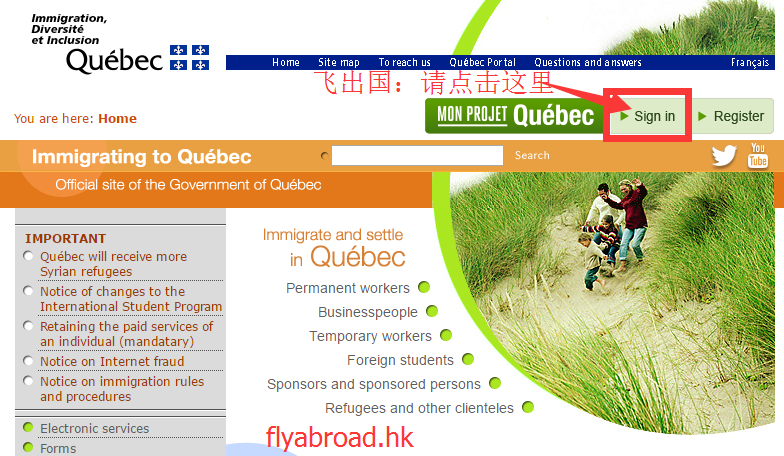
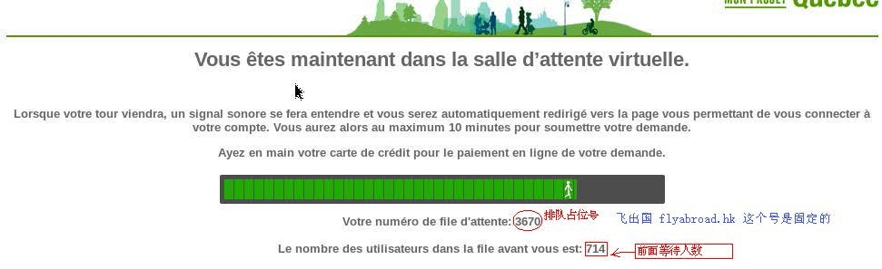
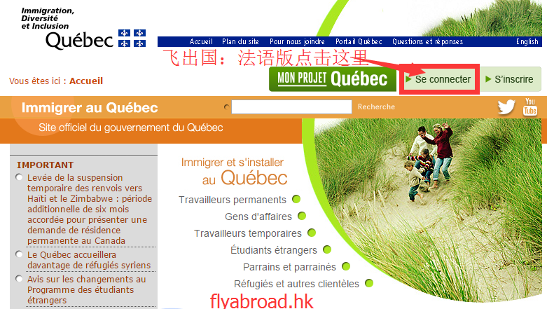

只要有电脑，打开一个网页就有机会根据网页上分到的排队号获得红包了。
如果你按照下面操作成功获得一个或多个20000之内的占位号码，一旦该占位号成功被使用将可以获得2000元现金红包。
你需要做的很简单，8月16日晚上8点左右打开电脑， 进入 魁北克移民官网链接， 点击登录 Sign In，看到有小人原地踏步后剩下的就是等。随后8点半左右就可以看到界面上显示一个数字的排队号了， 这个号就要要抢的配额，把这个号 提交过来就可以按上面规则获得红包了。
注意：8月16日周二晚上8:00点前后登陆电脑（不能用手机和平板，必须电脑：台式或笔记本电脑都可以）。可以多台电脑，多个浏览器同时打开这个链接。时间上可以是7点多就刷着，但最晚不能晚于8:25，因为8:30系统就开始正式分配号码了，8:30之后打开的肯定号码很靠后了。
具体操作流程，链接及截图：进入主页，点登录，等分配排队号，就这么简单。
首先，将浏览器打开并进入 魁北克移民官网链接。
然后，在页面右上角点击 “Sign in” ：

再之后就是等待进入虚拟等候室排队：如果系统处于维护界面，需要间隔性的刷新网页， 或隔一段时间就重复点击一下 “Sign in”（这种方式比较稳妥）， 直到出现一个小人在原地踏步（随后就不用重复刷新或重复打开了）， 8:30后系统将分配一个排队号（占位号，虚拟排队编号）。

出现类似上图的界面后说明已经被分配占位号了（排上对了），上面的 “3670” 是排队号，也就是你是第 3670 号。如果您很幸运这个占位号在 15000 之内的话，就可以将占位号信息（包括抢到的位置号码，和该页面当前的完整链接）及你的联系方式提交给飞出国了，提交后才能拿到红包哦。 请注意，不要将该占位号和链接发给第三个人。
链接地址是类似下面的一长串，直接在浏览器地址栏拷贝："https://immigrationquebec.queue-it.net/inqueue.aspx?c=immigrationquebec&e=mpq201609&q=47e6831a-c2be-492b-8cbc-54ef2e71ccbb&cid=fr-CA"。
看手气啦，根据您抢到的排队号不同奖项不同（需要将抢到的号码和对应链接在线方式提交给我们）：
您也可以去飞出国红包来袭首页提交这些信息。 http://qh.flyabroad.hk 。
插曲：不小心进入法文版界面怎么办？按下图操作就可以了。
如果你不小心进入了魁北克官网的法语界面也不用怕，只要点击 Se connecter就可以了（其他操作都与上面一样）：

多个浏览器可能抢到多个号，抢到占位号后记得去提交啊，一个号提交一次，不提交没人发红包的，提交链接点击这里。
下面只适合高级用户，看不懂或没信心看懂的可以不看，没关系， 随便看一眼就行，能看懂多少看多少，不影响抢配额。
说的意思其实很简单，就是一台电脑上装多个浏览器可以多个浏览器一起打开抢。如果你的电脑上已经安装了多个浏览器，直接用这些浏览器就行了。
再次提醒，8月16日（周二）北京时间晚上8:30之前，将浏览器打开并进入 魁北克移民官网链接。
可以利用的电脑都利用起来，多台电脑一起抢，也可以在本地电脑上安装多个浏览器，同时抢。多个电脑，每台电脑上多个浏览器，概率更大。
可以使用软件管家等工具在本机安装多个浏览器，例如谷歌的 google chrome，火狐（firefox），猎豹，搜狗，百度，360，QQ，苹果 Safari，Opera 等浏览器。同时用多个浏览器打开排队页面会增加抢到的概率，不同浏览器可能会抢到不同的占位号。
多台电脑，多个浏览器可能抢到多个号，抢到占位号后记得去提交啊，一个号提交一次，不提交没人发红包的，提交链接点击这里。